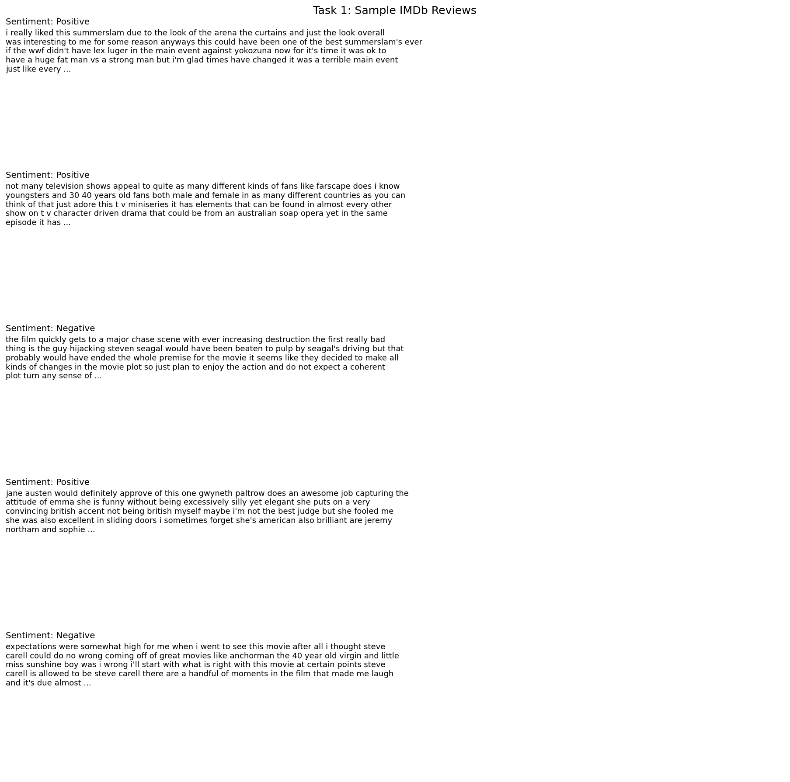
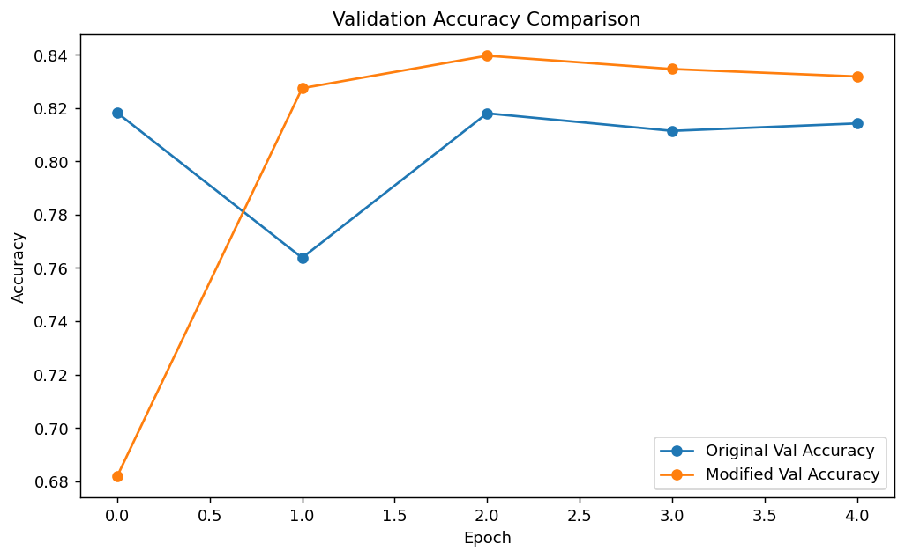
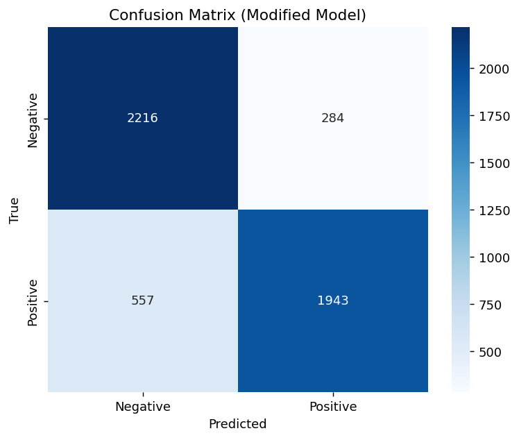

Problem Type
Binary text classification on movie reviews.
This report presents the complete workflow for Lab 10, including data preprocessing, LSTM model construction, training and evaluation, parameter modification, and final sentiment prediction on custom review samples. The structure is preserved task by task according to the original lab requirements.
A startup requires an automated sentiment analysis system that can classify movie reviews as positive or negative. Traditional MLP-style text classifiers do not model word order and struggle with contextual phrases such as not good. For that reason, this lab uses an LSTM (Long Short-Term Memory) network, which is capable of learning sequential dependencies and preserving useful context across a review.
Binary text classification on movie reviews.
Use sequence modeling instead of fixed-input MLP processing for sentiment understanding.
Embedding + LSTM + Sigmoid output layer.
The modified LSTM reached 0.8318 test accuracy.
The IMDb dataset was cleaned and transformed into padded numerical sequences so that it could be used as input to the LSTM model. Reviews were normalized through lowercasing, HTML removal, whitespace cleanup, and tokenization.
| Component | Value / Method |
|---|---|
| Dataset Source | IMDB Dataset.csv containing 50,000 movie reviews |
| Vocabulary Size | Tokenizer(num_words=5000, oov_token="<OOV>") |
| Sequence Length | 100 tokens |
| Splitting Strategy | Train / Validation / Test = 40000 / 5000 / 5000 |
| Padding Strategy | padding="post", truncating="post" |
| Label Encoding | Negative = 0, Positive = 1 |
def clean_review(text):
text = html.unescape(str(text))
text = re.sub(r"<[^>]+>", " ", text)
text = text.replace("\n", " ")
text = re.sub(r"[^a-zA-Z0-9' ]+", " ", text)
text = re.sub(r"\s+", " ", text).strip().lower()
return text
tokenizer = Tokenizer(num_words=5000, oov_token="<OOV>")
tokenizer.fit_on_texts(train_df["review_clean"])
X_train = pad_sequences(train_sequences, maxlen=100,
padding="post", truncating="post")This code removes noise from the review text, converts words into integer tokens, and ensures that every review has the same length before training.
Padding is necessary because neural networks train in batches.


The required baseline architecture consists of an Embedding layer, a single LSTM layer, and a sigmoid output neuron. The Embedding layer maps word IDs to dense vectors, the LSTM processes the sequence in order, and the sigmoid output converts the final representation into a probability for binary sentiment classification.
model = tf.keras.Sequential([
tf.keras.layers.Embedding(input_dim=5000,
output_dim=64,
input_length=100),
tf.keras.layers.LSTM(64),
tf.keras.layers.Dense(1, activation='sigmoid')
])def build_lstm_model(max_len, lstm_units=64,
dropout_rate=0.0, learning_rate=1e-3):
model = tf.keras.Sequential([
tf.keras.layers.Embedding(input_dim=MAX_WORDS,
output_dim=EMBEDDING_DIM,
input_length=max_len),
tf.keras.layers.LSTM(lstm_units, dropout=dropout_rate),
tf.keras.layers.Dense(1, activation="sigmoid"),
])
model.compile(optimizer=tf.keras.optimizers.Adam(learning_rate),
loss="binary_crossentropy",
metrics=["accuracy"])
return model| Design Choice | Academic Explanation |
|---|---|
| Embedding Layer | Transforms sparse token IDs into dense vectors so the network can learn semantic relations among words. |
| LSTM Instead of SimpleRNN | LSTM uses gated memory to retain important information over longer word sequences and better handles contextual phrases such as negation. |
| Sigmoid Output | Binary sentiment classification requires a probability between 0 and 1, which is provided by the sigmoid activation function. |
The original model was trained for 5 epochs using a batch size of 32. Training and validation curves were analyzed to assess generalization performance and determine whether the model was underfitting, overfitting, or reasonably fit.
history_original = original_model.fit(
X_train_original,
y_train,
validation_data=(X_val_original, y_val),
epochs=5,
batch_size=32,
verbose=1,
)
original_test_loss, original_test_acc = original_model.evaluate(
X_test_original, y_test, verbose=1
)Original model diagnosis: Overfitting
Train accuracy: 0.8817
Validation accuracy: 0.8142
Train loss: 0.2873
Validation loss: 0.4262The original model learned the training set better than the validation set, producing a visible generalization gap. This is consistent with mild overfitting.


Two modifications were applied to improve the model:
The objective of these changes was to increase model capacity while also introducing regularization to reduce the generalization gap.
modified_model = build_lstm_model(
max_len=100,
lstm_units=128,
dropout_rate=0.3,
)The modified model improved validation accuracy from 0.8142 to 0.8318, an absolute gain of 0.0176. Test accuracy also improved from 0.8164 to 0.8318.
| Model | Train Accuracy | Validation Accuracy | Test Accuracy | Train Loss | Validation Loss | Test Loss |
|---|---|---|---|---|---|---|
| Original | 0.8817 | 0.8142 | 0.8164 | 0.2873 | 0.4262 | 0.4230 |
| Modified | 0.8826 | 0.8318 | 0.8318 | 0.2818 | 0.3979 | 0.4001 |

The modified model was selected as the final model because it achieved the higher validation accuracy. It was then applied to custom review sentences and evaluated on the held-out test set using a confusion matrix and classification report.
custom_samples = [
"This movie was absolutely amazing",
"This movie was not good at all",
"The acting was great but the story was too slow and boring",
"I really loved the characters and the ending was satisfying",
"I expected something better, and honestly it was a waste of time",
]
custom_sequences = tokenizer.texts_to_sequences(
[clean_review(x) for x in custom_samples]
)
custom_padded = pad_sequences(custom_sequences, maxlen=100,
padding="post", truncating="post")
custom_probs = best_model.predict(custom_padded, verbose=0)| Selected Model | Modified LSTM |
|---|---|
| Final Test Accuracy | 0.8318 |
| Final Test Loss | 0.4001 |
| Probability Rule | Probability ≥ 0.5 = Positive, otherwise Negative |
| Review | Predicted Probability | Predicted Sentiment |
|---|---|---|
| This movie was absolutely amazing | 0.9819 | Positive |
| This movie was not good at all | 0.2619 | Negative |
| The acting was great but the story was too slow and boring | 0.0548 | Negative |
| I really loved the characters and the ending was satisfying | 0.9863 | Positive |
| I expected something better, and honestly it was a waste of time | 0.0165 | Negative |
These examples show that the model correctly identifies explicit positive sentiment, strong negative sentiment, and mixed statements where negative wording dominates the overall review.

precision recall f1-score support
Negative 0.7991 0.8864 0.8405 2500
Positive 0.8725 0.7772 0.8221 2500
accuracy 0.8318 5000
macro avg 0.8358 0.8318 0.8313 5000
weighted avg 0.8358 0.8318 0.8313 5000The report indicates that the model has higher recall for the negative class than for the positive class, meaning it is slightly better at detecting negative reviews than positive ones in this experiment.
LSTM performs better than SimpleRNN because it uses gated memory to preserve useful information for longer parts of the sequence. This allows it to understand contextual phrases and word order more effectively, which is essential for sentiment analysis.
The memory cell stores information across time steps so the network can remember earlier words while processing later ones. This helps the model interpret expressions such as not good correctly instead of judging the word good in isolation.
Padding is important because deep learning models are typically trained in batches, and every sample in a batch must have the same shape. Without padding, reviews of different lengths cannot be arranged into a regular tensor.
If the sequence length is too small, long reviews are truncated and important sentiment-bearing words may be removed. This can reduce the model's accuracy because it no longer receives the full context of the review.
Increasing the number of LSTM units gives the model greater representational capacity, which helps it learn more complex contextual patterns. In this lab, increasing the units to 128 and adding dropout improved validation accuracy from 0.8142 to 0.8318, so the modification was beneficial on this dataset.
The original LSTM model achieved strong training performance, but the difference between training and validation metrics indicated overfitting. The validation curves showed that although the network continued to learn the training set, its generalization to unseen reviews did not improve at the same rate. This is a common issue in sequence models when the model starts memorizing dataset-specific patterns.
The modified model addressed this by increasing the LSTM capacity while also introducing dropout. The result was a better balance between learning power and regularization. Validation accuracy improved, test loss decreased, and the final confusion matrix showed a solid overall classification ability on the held-out test set. These findings confirm that LSTM-based text models are more suitable than basic fixed-input approaches when the order and context of words influence the final meaning.
In this lab, the IMDb movie review dataset was preprocessed through cleaning, tokenization, and sequence padding, and then classified using an LSTM-based neural network. The experiment demonstrated the practical advantage of sequence learning for sentiment analysis, especially when the polarity of a sentence depends on contextual relationships among words.
The final modified model, using 128 LSTM units with dropout 0.3, outperformed the original baseline and achieved 83.18% test accuracy. Overall, the results show that thoughtful model modification can improve generalization, and that LSTM remains an effective architecture for binary sentiment classification tasks.